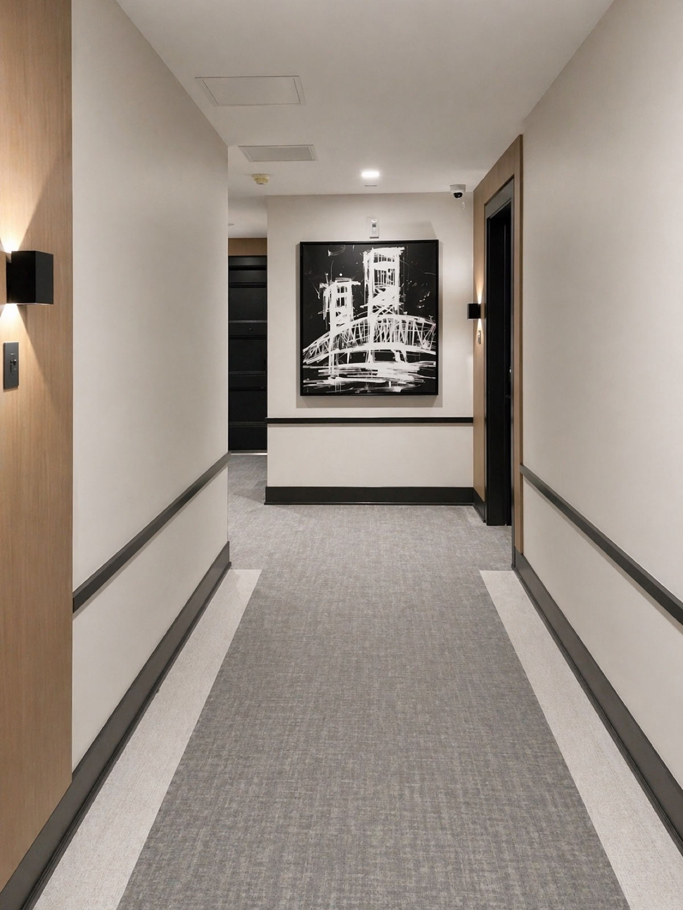
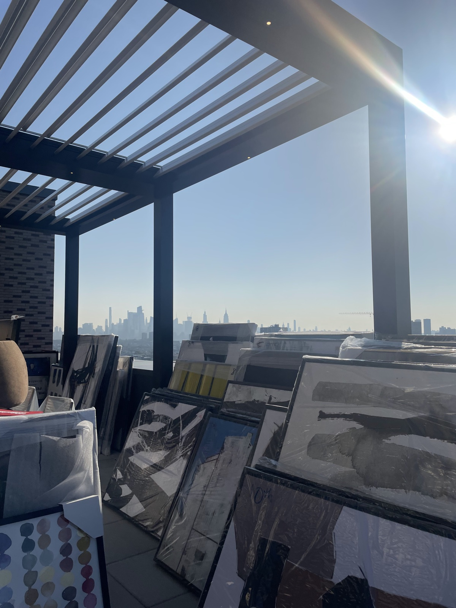
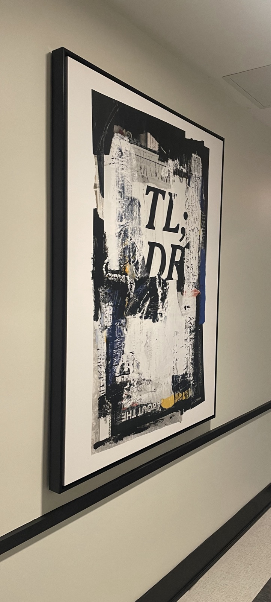
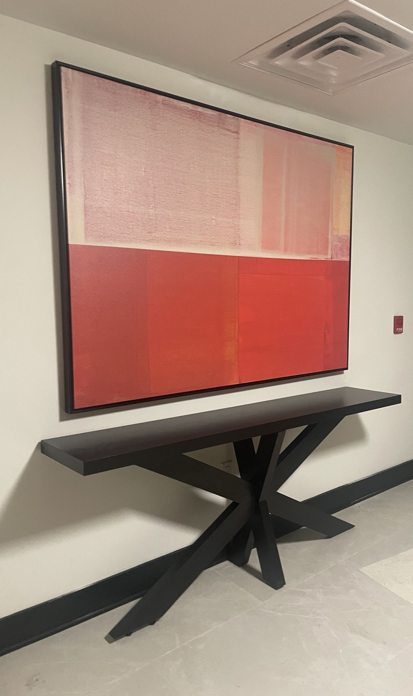

Overlook is designed for the resident who wants a relationship with their space, not just an address. Every room is treated as a vantage point: commanding, considered, and impossible to take for granted.
THE BRIEF
The client needed a model that communicated elevation, not just physically, but aspirationally. The space had to feel like a reward: refined, confident, and deeply intentional in every detail. Comfort was non-negotiable, but it had to be earned-looking comfort, not expected luxury.


DESIGN DECISIONS
Deep-toned walls establish command without heaviness through a palette of forest green, warm charcoal, and aged bronze that grounds the space without closing it. Furniture is sculptural and generous in scale, chosen to hold its own against the interior's strong architectural bones.
Overlook's defining gesture is its art program: over 100 individually curated pieces staged across the model and its surrounding common spaces. Every work was selected for verticality and presence. These pieces draw the eye upward and outward, reinforcing the sense of elevation that defines the Overlook identity.


THE RESULT
Overlook is the model that tends to close deals. Visitors who walk through it don't just see a beautifully designed apartment. They see a life they want to inhabit. That's the goal of every project: not to impress, but to resonate.